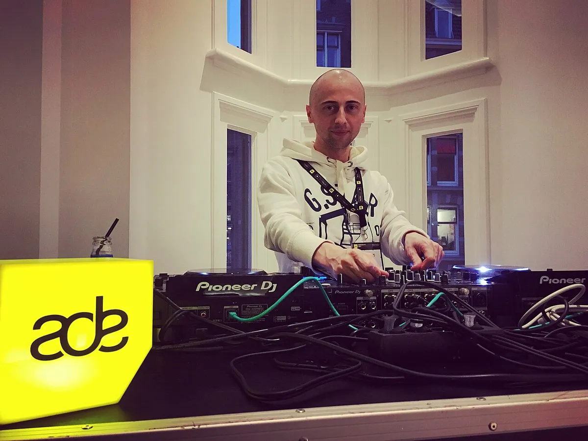

Amsterdam Dance Event
Amsterdam Dance Event (ADE) 2027
A five-day electronic music conference and club festival every October. When ADE 2027 is, what you can buy and where the events happen.
Can you simply go to ADE?
The first thing to know about ADE is whether you can simply go. You can, and it is also a trade conference, and the two are sold differently. The conference has one pass, the ADE Pro Pass, which also opens many festival events. Everyone else buys each night separately from whoever is running it, in a different part of the city. Which half you want decides what you pay.
ADE dates: when is ADE 2027?
ADE 2027 takes place from 20 to 24 October 2027, according to the organisers' own FAQ. That is a Wednesday to a Sunday. The conference runs Wednesday to Saturday, and the festival programme fills all five days and nights. The 2026 edition, the festival's 30th anniversary, ran from 21 to 25 October.
Tickets for the 2027 conference pass are not on sale yet, and the 2027 Pro Pass price has not been published. Festival tickets are a separate matter and open whenever each promoter announces its night.
Is ADE a festival? What Amsterdam Dance Event is.
ADE is two things sold separately, a conference and a festival, with smaller programmes around them.
The conference is the original. ADE Pro is the industry side, with keynotes, panels and meetings for people who work in electronic music. ADE Lab is the programme for emerging artists and young professionals, and is not included in the Pro Pass. Its home base is Felix Meritis.
The ADE festival is what most visitors mean by ADE. It is made up of club nights, concerts, day parties and stadium shows. The foundation does not book the acts. It invites outside events to join the programme. So one night can mean techno at the Gashouder, Nils Frahm at the Concertgebouw or an arena show at the Ziggo Dome.

Where ADE Amsterdam happens.
There is no single site. The conference is centred on Felix Meritis, and the events spread across the whole city. The official 30th-anniversary programme in 2026 gives a fair picture of the range: it listed events at the Gashouder, the Ziggo Dome and AFAS Live, and a separate arena festival, AMF, at the Johan Cruijff Arena. The ADE site also shows performances at the Concertgebouw and the Westerkerk.
The ADE programme lists more than 1,200 events in over 300 locations, so most nights are far smaller than the arena shows.
The Gashouder is also where Awakenings has held its October ADE special since 2012, which the Awakenings guide covers. For the clubs that run all year, not only during ADE, see the guide to the best clubs in Amsterdam.
Tickets and what ADE costs.
There are two ways in.
The ADE Pro Pass is the conference ticket. It is personal, requires ID at pick-up, and covers the whole conference programme plus entry to festival and Arts & Culture events, though at high-demand venues capacity is limited and a pass is not a guarantee of entry. It does not include ADE Lab. The organisers do not sell conference-only tickets or day passes, and it is sold through the ticketing partner Weeztix. The 2027 Pro Pass price has not been published.
Festival events are bought one at a time, from the promoter or through the event page on the ADE website. Prices are set one by one by their organisers, and nothing here can be quoted ahead of the 2027 announcements.
If you are going for the music and not for the business, you do not need a Pro Pass: pick the nights you care about and buy those tickets directly.
Sets played there
Hearing ADE.
The sets below were played at ADE.
Yanamaste's Intercell set, titled as an ADE set and filmed in 2025, is the most-watched ADE set in the Selector catalogue, and is tagged techno.
Mixmag was filming at ADE long before that: this set, by Joran van Pol and Oliver Huntemann, is from 2013 and is tagged techno and tech house.
ADE FAQ.
When is ADE 2027?
Wednesday 20 to Sunday 24 October 2027. The 2026 edition ran 21 to 25 October.
Is ADE a festival or a conference?
Both. The conference, ADE Pro and ADE Lab, is for people who work in electronic music. The festival is a citywide programme of more than 1,200 club nights, concerts and shows put on by outside promoters.
How much does ADE cost?
It depends on what you go to. The ADE Pro Pass is a single price for the conference, with the 2027 rate not yet published. Festival events are priced one by one by their organisers.
Can I go to ADE without a Pro Pass?
Yes. Festival tickets are sold by each event's organiser, and you can buy any of them without a conference pass. The Pro Pass is only needed for the conference.
Where is ADE held?
Across Amsterdam. The conference is based at Felix Meritis, and the festival uses over 300 locations, from clubs to the Concertgebouw concert hall and arenas such as the Ziggo Dome.
How long is ADE?
Five days and nights, Wednesday to Sunday. The conference part runs Wednesday to Saturday.
How many people go to ADE?
About 600,000 visitors in 2025, the most ADE has recorded, including 11,000 people from the music industry.
Sources.
Continue reading
Read next.
 Festivals~7 min read
Festivals~7 min readSziget Festival 2027: Dates, Music, Camping and Travel
Five days on Óbuda Island, with pop, rock and hip-hop beside club stages, theatre, circus and a rail link into Budapest.
Read article → Festivals~7 min read
Festivals~7 min readBoomtown Festival 2027: Dates, Location, History and Music
A five-day camping festival built as a fictional city, with soundsystem culture, electronic music, live bands and street theatre.
Read article → Festivals~7 min read
Festivals~7 min readMonegros Desert Festival 2027: Date, History and Guide
One long electronic event on exposed land near Fraga, with roots in Florida 135 and stages running through the night.
Read article → Rave spots~10 min read
Rave spots~10 min readBest Clubs in Berlin: The Legends and the Ones Still Open
The rooms that made Berlin a techno city, the famous clubs that closed, and the best clubs in Berlin that are still open.
Read article →